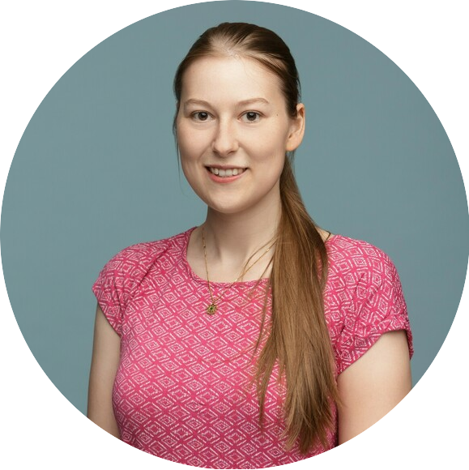
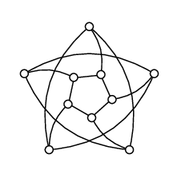

Franka Bause

I am a PhD student in the Data Mining and Machine Learning (Machine Learning with Graphs) group at University of Vienna.
I completed both my Bachelor’s and Master’s degrees at TU Dortmund University, graduating with honors in 2020.
Throughout my studies, I gained valuable experience working as a research and teaching assistant.
My research mostly centers around similarity measures for graphs, with the aim of improving both efficiency and accuracy.
I co-organized C'Est La Wien, and the MLG workshop in 2024.
I have accounts on Google Scholar, Github, and LinkedIn.
Email:
You can send mail to franka.bause[at]univie.ac.at
Office:
Faculty of Computer Science, Research Group Data Mining and Machine Learning
Room 6.01, Währingerstraße 29, 1090 Vienna, Austria

News
Publications
-
Franka Bause*, Fabian Jogl*, Patrick Indri, Tamara Drucks, David Penz, Nils M. Kriege, Thomas Gärtner, Pascal Welke, Maximilian Thiessen (2025):
Maximally Expressive GNNs for Outerplanar Graphs.
Transactions on Machine Learning Research (TMLR)
[pdf]
[poster]
[slides]
[video]
[code]
[reviews]
[journal]
-
Franka Bause, Samir Moustafa, Johannes Langguth, Wilfried N. Gansterer, Nils M. Kriege (2024):
On the Two Sides of Redundancy in Graph Neural Networks.
Machine Learning and Knowledge Discovery in Databases. Research Track
[pdf]
[code]
-
Franka Bause*, Christian Permann*, Nils M. Kriege (2024):
Approximating the Graph Edit Distance with Compact Neighborhood Representations.
Machine Learning and Knowledge Discovery in Databases. Research Track
[pdf]
[poster]
[code]
-
Franka Bause, Nils Morten Kriege (2022):
Gradual Weisfeiler-Leman: Slow and Steady Wins the Race.
Learning on Graphs Conference
[pdf]
[poster]
[code]
-
Franka Bause, Erich Schubert, Nils M. Kriege (2022):
EmbAssi: embedding assignment costs for similarity search in large
graph databases.
Data Min. Knowl. Discov. (36)
[pdf]
[poster]
[code]
-
Franka Bause, David B. Blumenthal, Erich Schubert, Nils M. Kriege (2021):
Metric Indexing for Graph Similarity Search.
Similarity Search and Applications - 14th International Conference
[pdf]
[poster]
[video]
-
Nils M. Kriege, Pierre-Louis Giscard, Franka Bause, Richard C. Wilson (2019):
Computing Optimal Assignments in Linear Time for Approximate Graph Matching.
2019 IEEE International Conference on Data Mining (ICDM)
[pdf]